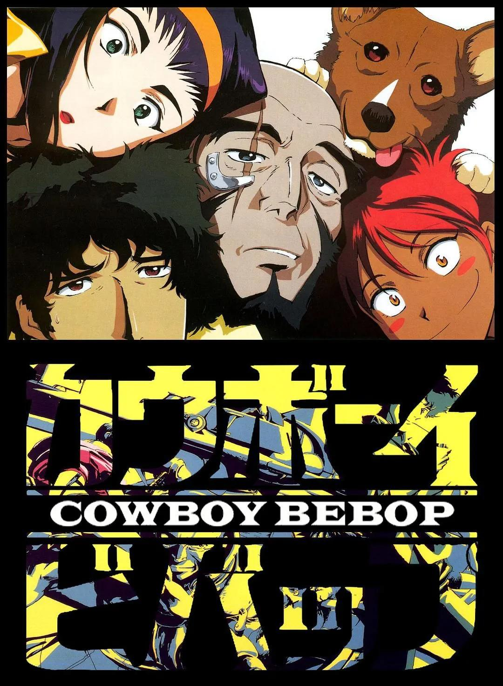
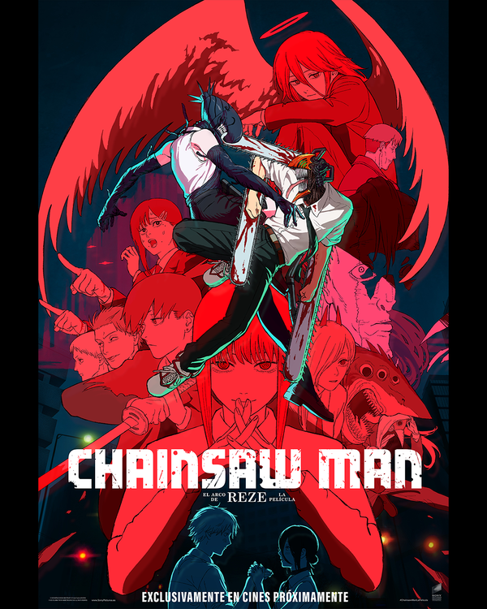
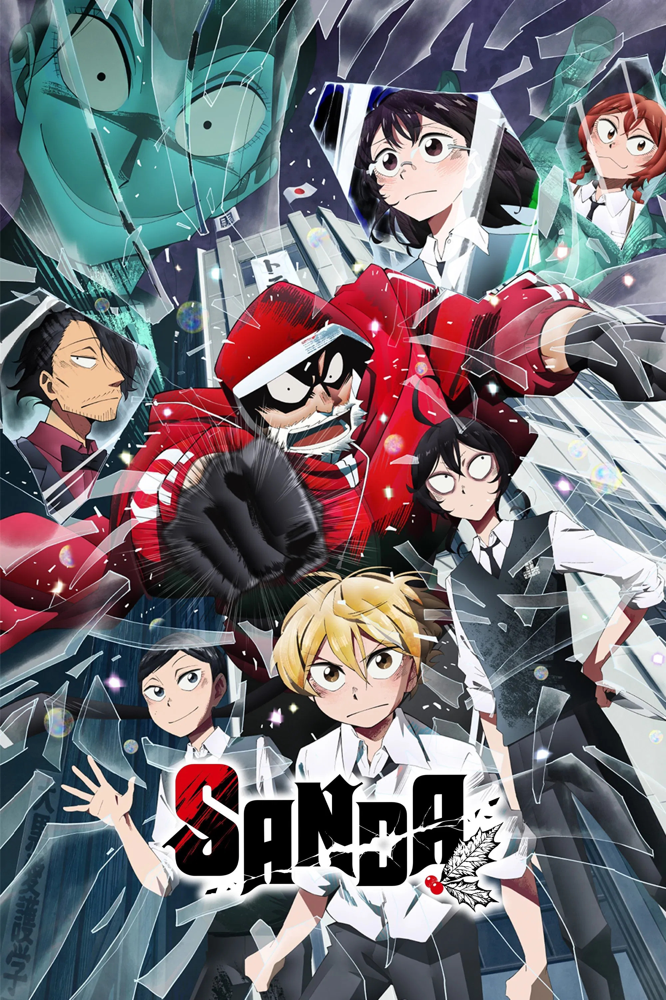
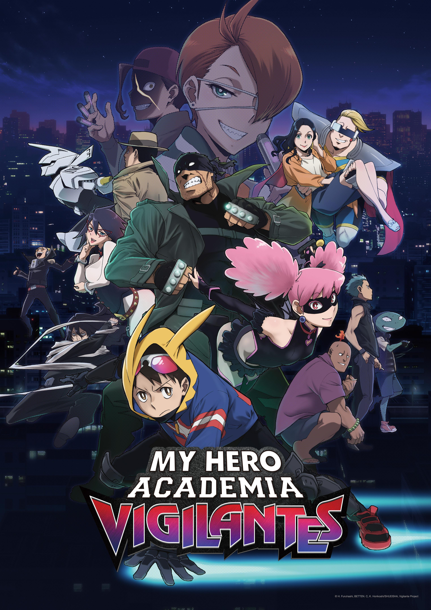
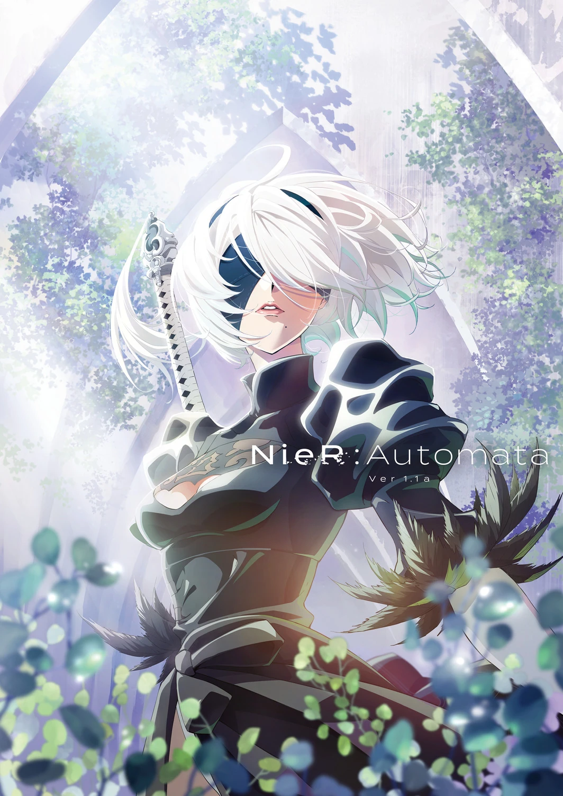
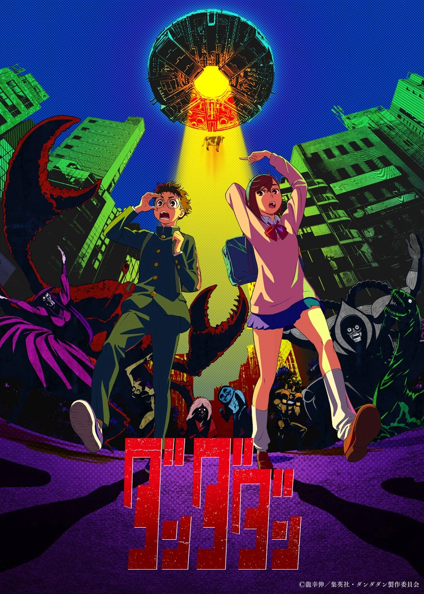
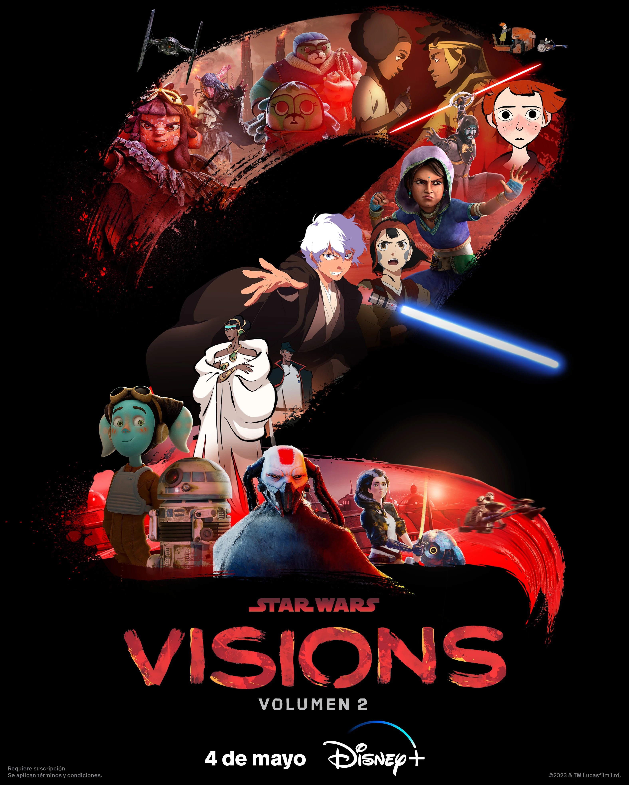
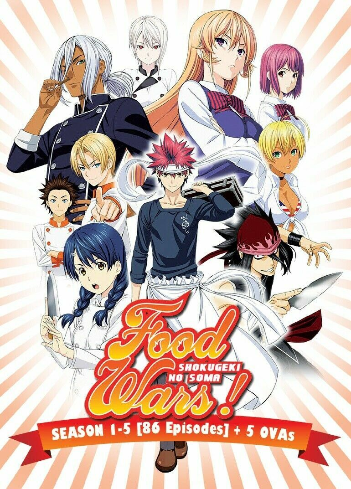

Acción · Fantasía oscura
Tokyo Ghoul
Ken Kaneki queda atrapado entre humanos y ghouls mientras intenta conservar su identidad.
Acción, fantasía y universos por descubrir. Explora nuestra selección y conoce de qué trata cada anime.
10 títulos disponibles para explorar
Acción · Fantasía oscura
Ken Kaneki queda atrapado entre humanos y ghouls mientras intenta conservar su identidad.

Ciencia ficción · Aventuras
Spike y la tripulación de la Bebop recorren el espacio como cazarrecompensas, con el pasado siempre cerca.

Fantasía · Aventuras
Una segunda vida en un mundo de magia abre un viaje de aprendizaje para Rudeus Greyrat.

Acción · Fantasía oscura
Denji y Pochita se enfrentan a un mundo de demonios, deseos y decisiones inesperadas.

Misterio · Fantasía
En una sociedad con pocos niños, Sanda se ve envuelto en un misterio ligado a la leyenda de Santa Claus.

Acción · Superhéroes
Koichi Haimawari descubre otra forma de ayudar a los demás al margen de los héroes profesionales.

Ciencia ficción · Acción
Los androides 2B y 9S luchan contra formas de vida mecánicas en una Tierra abandonada por la humanidad.

Sobrenatural · Comedia
Momo y Okarun descubren que los fantasmas y los extraterrestres pueden ser igual de reales y peligrosos.

Ciencia ficción · Antología
Cortometrajes animados exploran nuevas miradas y estilos dentro de la galaxia de Star Wars.

Comedia · Gastronomía
Soma Yukihira pone a prueba su cocina en una academia donde cada duelo exige creatividad y técnica.
No encontramos títulos con esos filtros. Prueba otro nombre o género.